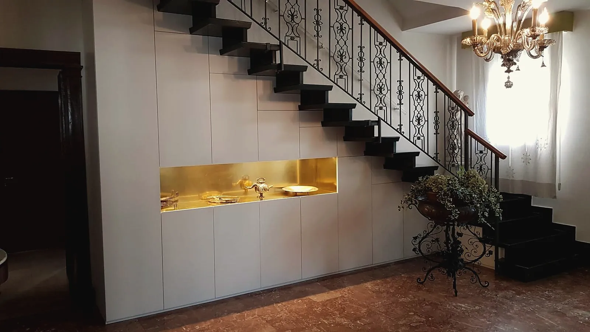
In stile o moderni.
Falegnameria a Mestrino, Padova. Arredi su misura, serramenti e restauro, dal disegno alla posa.
Chiama 049 900 4916 Chiedi un preventivo Via Levico 18, Mestrino: indicazioni
(01)Sottoscala a otto ante, nicchia in ottone
Otto ante con apertura a push e una nicchia centrale in ottone, con lo scasso per il led che fa risaltare il colore dorato.
Mauro Nosarini e Giuliano Saibene hanno cominciato da ragazzini in una falegnameria artigiana di Padova. Oggi, nella loro bottega di Mestrino, interpretano disegni di architetti o semplici schizzi, oppure progettano da zero.
- In laboratorio lavoriamo con macchinari a controllo numerico e verniciamo da noi, a ciclo d’acqua.
- La posa la curiamo personalmente, senza personale esterno od occasionale.
- Per le finiture verniciatura, laccatura e colore al campione; per i restauri la gommalacca di un tempo.
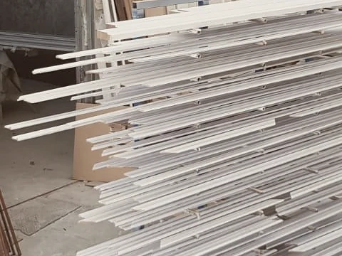
Che cosa facciamo
-
01Arredo su misura
Cucine, anche con l’anteprima in 3D. Armadi e sottoscala, librerie, bagni in corian, controsoffitti, interni di camper e barche.
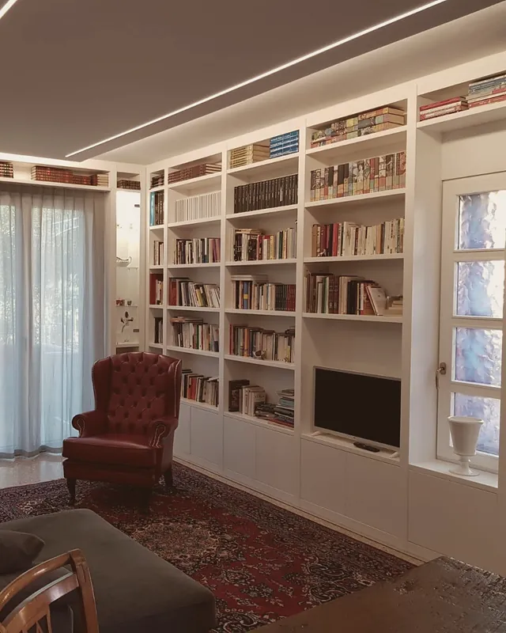
-
02Serramenti e porte
Finestre in legno o PVC, balconi e scuri in okumè, portoncini, porte interne a bilico e scorrevoli, blindate Dierre, gazebi.
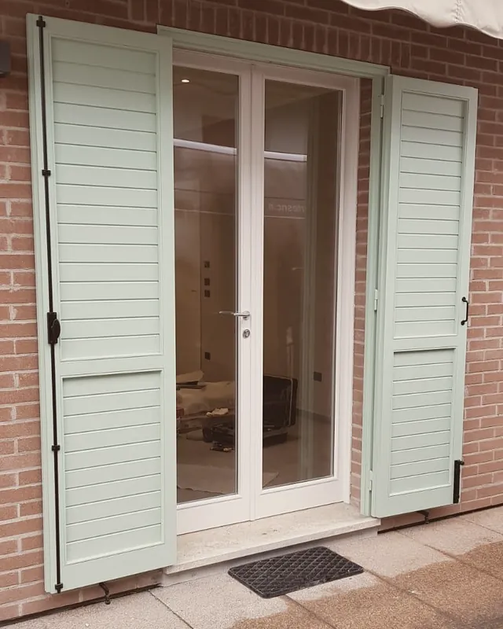
-
03Restauro
Mobili antichi di qualsiasi epoca, porte, portoni e finestre, travi e ambienti interni.
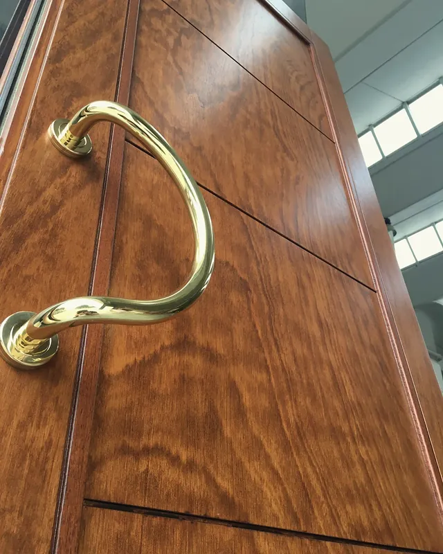
-
04Negozi e locali
Su disegno del committente: una pasticceria vicino a Bolzano, ristoranti, centri estetici, stand per le fiere.
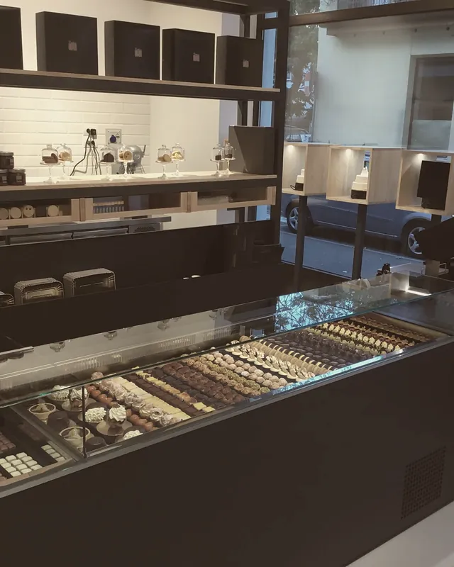
Ogni riga porta alla pagina del mestiere sul nostro sito.
Il portone d’ingresso in laboratorio, con la ferramenta consumata dagli agenti atmosferici e dal tempo.
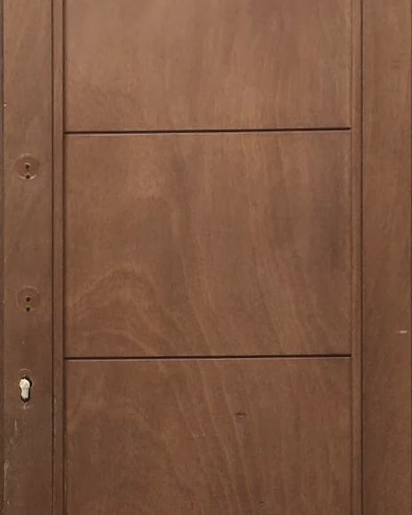
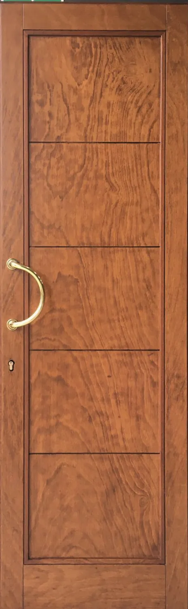
Portato a legno grezzo per ridargli vita e colore, tre mani di vernice all’acqua, ferramenta nuova.
Restauriamo mobili antichi di qualsiasi epoca, porte, portoni e finestre.
Trattamento antitarlo, verniciatura a gommalacca come si usava un tempo, legno vecchio della stessa essenza. Il colore lo facciamo al campione, oppure ripristiniamo quello originale.
Manda una foto del pezzoSi apre la tua posta: allega una foto intera e una di un dettaglio. Oppure portalo in bottega, chiamando prima.
Le porte di Gio Ponti
Palazzo del Bo, Università di Padova
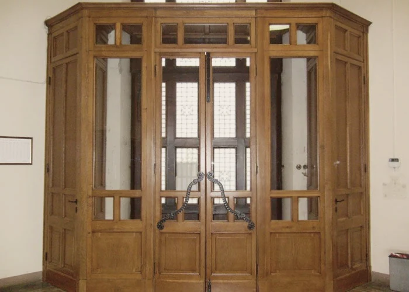
(01)Nella sede del Bo
A Padova abbiamo restaurato mobili, oggetti, porte scorrevoli e pareti divisorie che portano la firma del grande architetto Gio Ponti.
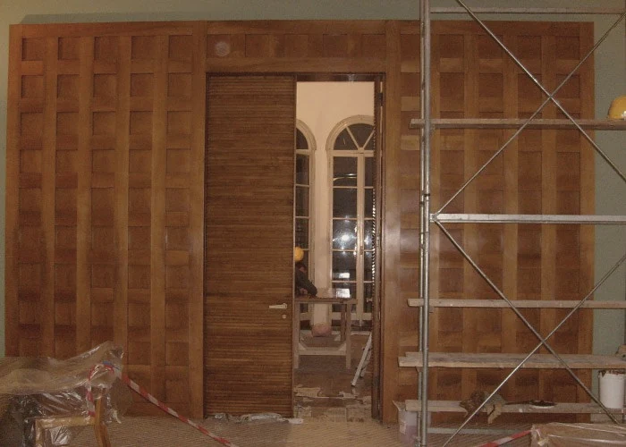
(02)Porte scorrevoli e pareti divisorie
Le pareti in legno a riquadri e le loro porte, restaurate sul posto, con il ponteggio montato.
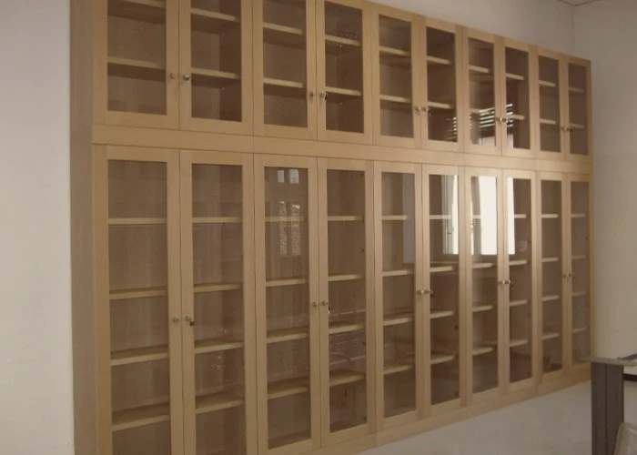
(03)Mobili e oggetti
Le librerie a vetri e gli arredi in legno della sede dell’Università.
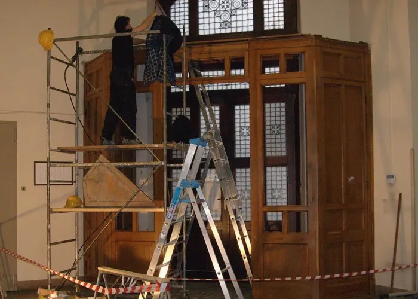
(04)Con i complimenti dell’Università
Il lavoro si è chiuso con i complimenti espressi dai responsabili dell’Università stessa.
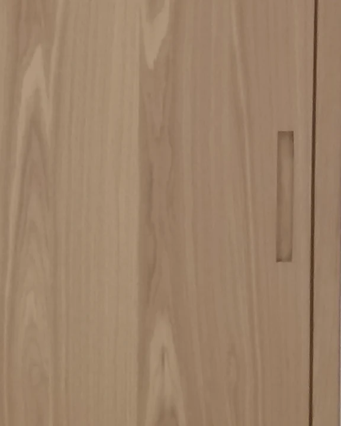
Sette lavori, su ventidue
Dalla porta a bilico alla credenza restaurata. Le schede complete sono sul nostro sito, una per lavoro: tutte le 22 realizzazioni.
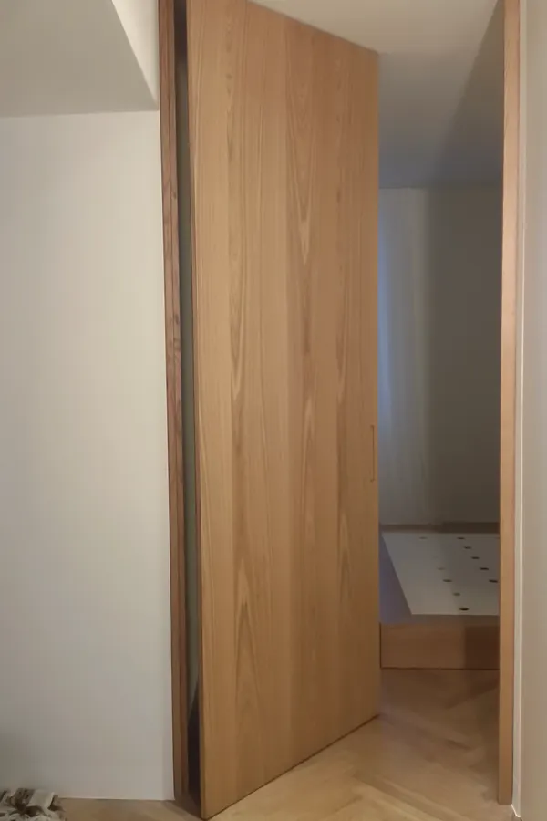
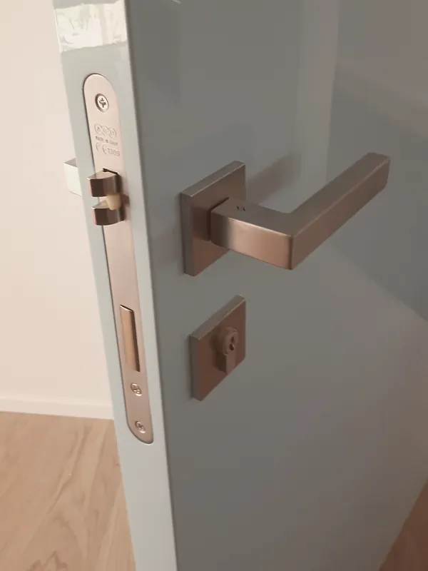
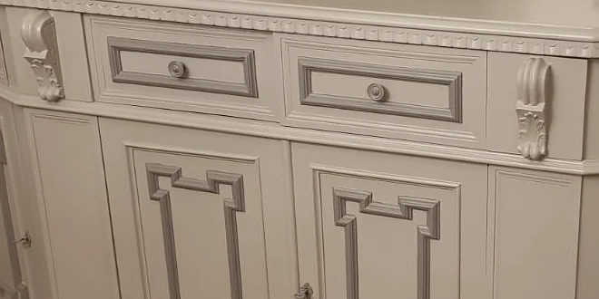
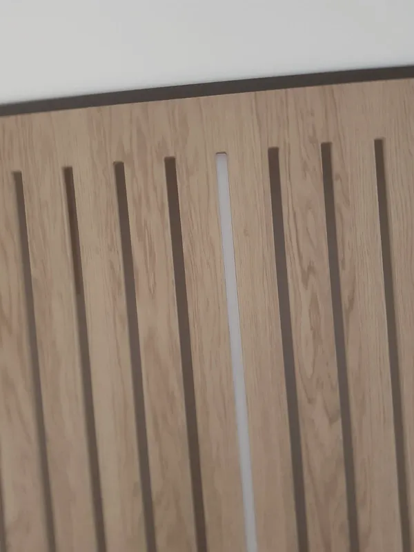
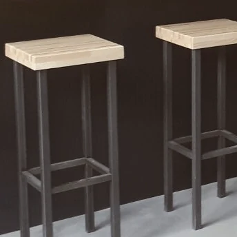
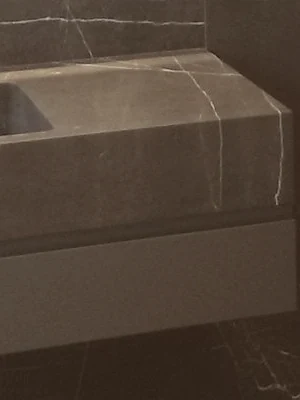
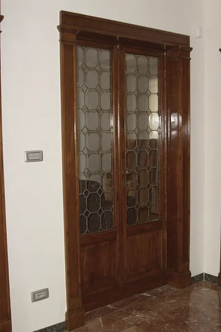
Chiamate prima di passare: vi diciamo quando trovarci in bottega. info@bottegadellartesnc.it
Via Levico 18
35035 Mestrino (PD)
Indicazioni stradali sulla mappa
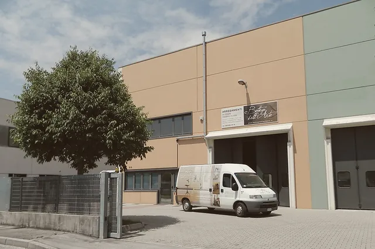
- Bottega
- 049 900 4916
- Mauro Nosarini
- 347 764 1720
- Giuliano Saibene
- 347 410 9263
Chiedi un preventivo
Mandaci foto, misure o un disegno, anche un semplice schizzo: ti rispondiamo con un preventivo senza impegno. Per le cucine anche un’anteprima con immagini in 3D, da modificare prima di costruire.